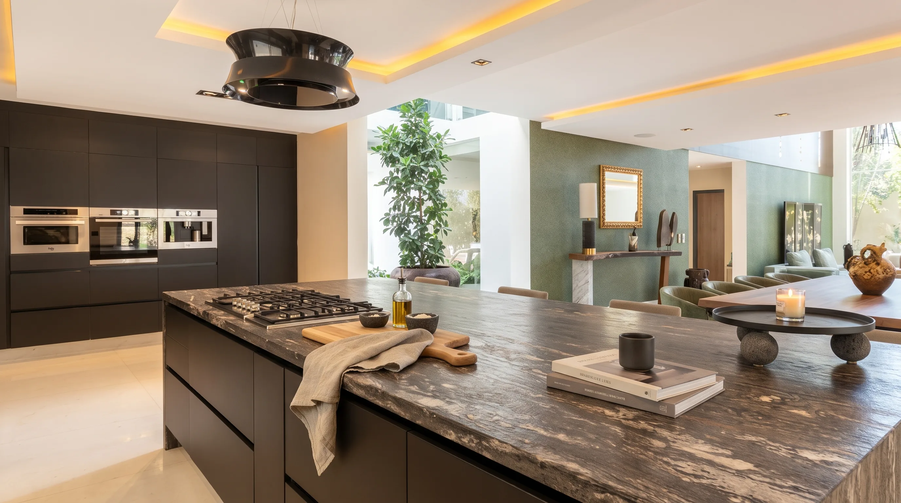
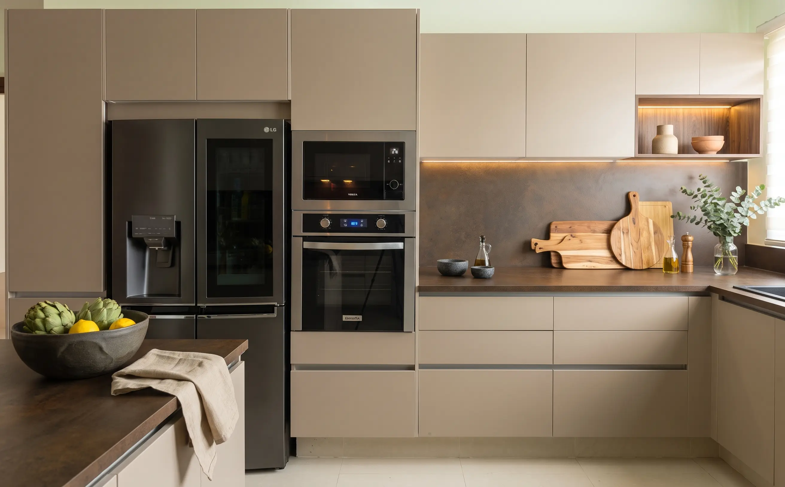
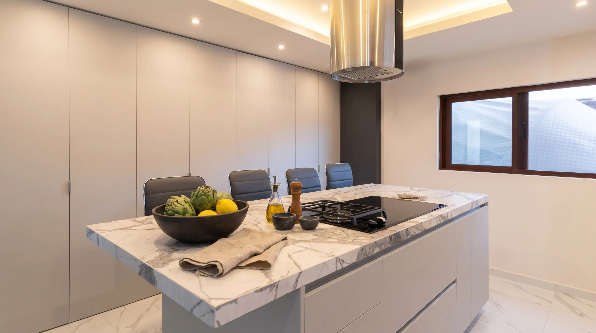
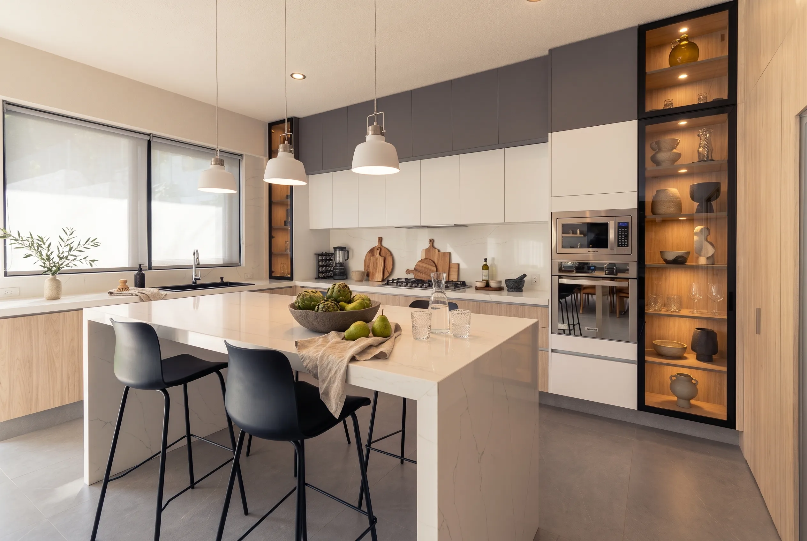

Cocinas con isla monolítica
Islas en piedra natural o sinterizada con corte a 45°: la veta corre sin cortes por la cubierta y las cascadas laterales.


Diseñamos, fabricamos e instalamos cocinas integrales con isla, en L o en U, con piedra natural, nogal y herrajes europeos. Ven al showroom y cotiza tu proyecto.
Medimos tu espacio, proyectamos la distribución que mejor funciona para cómo cocinas y recibes, y la fabricamos al milímetro. Antes de fabricar ves tu cocina en 3D y eliges en el showroom las piedras, maderas, lacas y herrajes reales que vas a tener en casa.
Elige lo que quieres en tu cocina y lo marcamos en tu solicitud de cotización.
Islas en piedra natural o sinterizada con corte a 45°: la veta corre sin cortes por la cubierta y las cascadas laterales.

02 / CUBIERTASTrabajamos Dekton, Neolith, cuarzos y mármoles seleccionados. Los ves y los tocas en el showroom antes de decidir.

03 / INTEGRACIÓNTorres de hornos, refrigeración panelable y alacenas con apertura asistida, moduladas al milímetro para que la cocina se lea como una sola pieza.

04 / ORDENPuertas escamoteables que esconden la estación de desayuno, los hornos, la cava o el área de preparación cuando no los usas.

05 / LUZLED cálido de 2700K empotrado en golas, nichos, zoclos y vitrinas de cristal templado, con circuitos independientes para cada escena.
06 / CONTINUIDAD
El mismo nogal o lacado mate de la cocina sigue por muros, pasillos y comedor, con puertas coplanares que desaparecen en el lambrín.
Con isla, en L, en U o abiertas al comedor. Toca cualquier foto para verla completa.
La primera sesión de diseño no tiene costo.
Depende de las medidas, la distribución y los materiales que elijas. Por eso cada cotización parte de un diagnóstico de tu espacio. La primera sesión de diseño no tiene costo.
Las dos. Trabajamos desde planos arquitectónicos, en obra gris o sobre una cocina que quieres remodelar. Revisamos tus planos o levantamos medidas en sitio.
Sí. En el showroom de Blvd. Bernardo Quintana ves y tocas las piedras, maderas, lacas y herrajes reales de tu proyecto, y revisas tu cocina en 3D antes de fabricarla.
Sí. Proyectamos torres de hornos, refrigeración panelable y electrodomésticos integrados para que todo quede al ras del mobiliario.
Sí. Podemos vernos en tu obra o domicilio en Querétaro, o empezar con una videollamada de diagnóstico.
Sí. Fabricamos e instalamos con garantía y con acompañamiento directo en obra hasta la entrega.
Sí. Recibimos tus planos y proyectamos la cocina sobre ellos. Indícalo en el formulario para atenderte como despacho.
Ya sea que estés construyendo desde planos o remodelando tu cocina en Querétaro, te entregamos una propuesta hecha para tu espacio y tu forma de cocinar.
Blvd. Bernardo Quintana 7 D, Col. Álamos 2da. Sección
Querétaro, Qro. C.P. 76160
Teléfono: 442 719 7102
WhatsApp: 442 719 7102
Atención personalizada previa cita • Tel. y WhatsApp: 442 719 7102
© 2026 FINEZZA Querétaro • Cocinas a la medida • Blvd. Bernardo Quintana 7 D, Col. Álamos 2da. Sección, Querétaro, Qro.